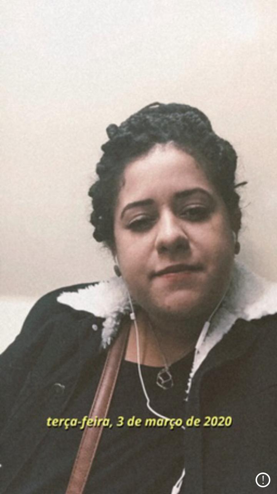
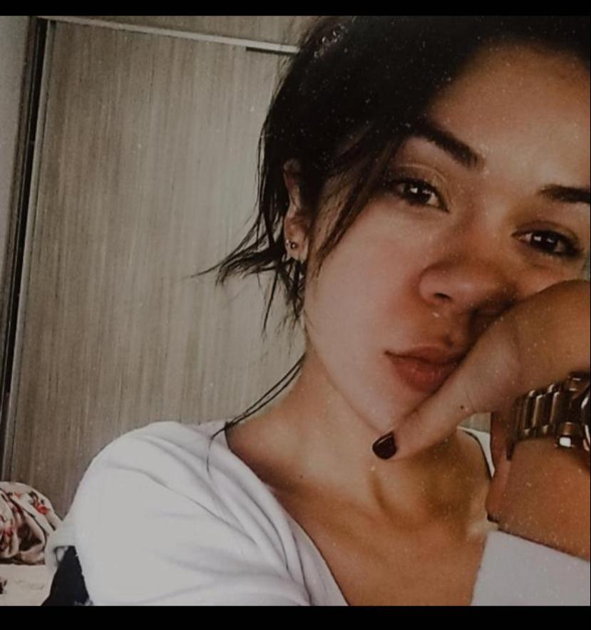

|
Ana Clara Fundadora |
Mariana Financeiro |
Adriana Produção |
Foi com a vontade de ter um negocio sob a perspectiva colaborativa que entre duas amigas Ana Clara e Allana, resolveram inaugurar na sua sala um centro de produção com quadros decorativos.
Para a garantia de renda do local elas confiaram na produção e começaram a fechar eventos em feiras. Sim feiras de verduras, legumes. A ideia sempre foi para ter uma renda extra para manter o aluguel e suas despesas fixas. Até começarmos pegar amor pela produção e criação.
As duas estavam desempregadas, então começamos a nos dedicar o dobro, começamos a pagar feiras de artesanatos para ganhar clientes e conseguirmos obter mais lucros para pagar os valores das despesas dos produtos.
Assim fomos conquistando nossos clientes e reconhecimento pelo trabalho e com incentivo começamos a inovar e fazer criação de novos produtos. Começamos com os quadros, depois fomos para as Flâmulas, a famosa bandeirinha!
A Adriana, tem um dom com a letra e desenho, começou a fazer nossas flâmulas com muito amor e dedicação. Como podem ver sempre feito com muito amor.
Então começamos a produção de vasos, como sempre na famosa sala(era nosso canto) então começamos a vender muito. Era algo que se encaixava perfeitamento em nosso orçamento para conseguir manter nosso negocio. O custo era menor que dos quadros, então começamos a fechar encomendas para: casamentos, aniversários, batizados e chá de bebe.
Hoje a loja é comandada pela Adriana e a Mariana, que seguem com a loja com muito amor e dedicação, e todos os dias é um crescimento maior, e me sinto orgulhosa de fazer parte dessa equipe!
Seja Bem-Vindo A Loja A Toca